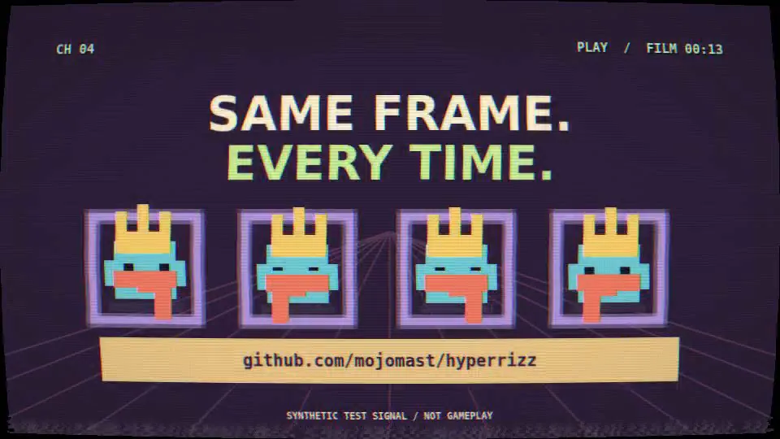

A Hermes Agent plugin by Kyle Durepos
Hyperrizz
Tell Hermes the story. Watch your film take shape.
- Prod.
- hyperrizz
- Roll
- v2.1.0
- Tools
- 3
- Starter
- HyperFrames 0.9.23
- Verifier
- 8 FFmpeg tests
- Hermes
- >=0.23.0
INT. HERMES CHAT — CONTINUOUS
You tell Hermes the story. Hermes researches, art-directs, writes the scenes, builds a HyperFrames project, checks it and iterates. You watch the real project in a live review pane, with playback, sound, a scrubber and frame stepping, before anyone spends time encoding an MP4.
(you pause on a moment)
You write what you want changed and hit Iterate with Hermes. The note carries the project, revision and exact frame back into the conversation. The next successful build refreshes the preview. When you want the controls yourself, Full editor opens the actual HyperFrames Studio inside the pane.
Production is local: Node, Chromium and FFmpeg, with no API keys and no hosted generation.
CUT TO:
SHOT LIST
| Shot | Description |
|---|---|
| 1A | Agent-led HyperFrames films with a live review pane, frame notes, revisions, and on-demand full Studio |
| 2A | Three tools: hyperrizz_project, hyperrizz_review, hyperrizz_produce |
| 3A | v2.1.0 money shot: every delivered film opens on a finished hero at full brightness so frame 0 works as a thumbnail |
| 4A | Local Node/Chromium/FFmpeg production; no API keys or hosted generation |
| 5A | Starter pinned to HyperFrames 0.9.23; Linux is the tested production platform |
| 6A | verify-media.py extracts frame 0 and rejects a near-black or blank opening |
hyperrizz_projecthyperrizz_reviewhyperrizz_produce
STORYBOARD — WHAT YOU CAN MAKE
Tell Hermes the story and have it materialize a HyperFrames project you can review in the live pane
Leave frame-specific notes and request a revision pass without leaving chat
Open the full HyperFrames Studio when you want to edit the film yourself
Deliver a film that starts on a readable hero/title frame (the v2.1.0 money-shot default), suitable as a social thumbnail
Run the broadcast lab example (docs/examples/broadcast-lab.png and contact sheet in img/) as a known production check
Verify the finished MP4 with the packaged verifier, including the frame-0 hero check
DIRECTOR'S NOTES
From the README: reuse the engineering, invent the film.
| A good-looking frame needs… | A finished film also needs… |
|---|---|
| A subject-derived visual identity | An editorial arc and readable holds |
| Strong type and composition | Meaningful variation between shots |
| Convincing media treatment | Honest provenance and sharp source pixels |
| Music and motion | Correct downbeat, phrase phase and audio levels |
DAILIES
CONTACT PRINTS
Hyperrizz live review pane, running the actual broadcast composition. The advanced broadcast lab: dressed pixel characters, CRT/VHS treatment and a title card reading Same frame. Every time. Contact sheet of frames from the broadcast lab example film. The full HyperFrames Studio: compositions, preview, design inspector and a two-scene timeline.
CALL SHEET — INSTALL
hermes plugins install mojomast/hyperrizz --ref 35c482e22413ee43c74955bd6da7fe7b053cdd9b
hermes plugins enable hyperrizzThe package includes the agent tools and desktop/plugin.js. For a remote Hermes backend, install the Desktop half on the client through Install Plugin as well. The first build installs the pinned npm dependencies automatically. Linux is the tested production platform; macOS is declared but not yet tested. Platforms in the catalog entry: linux, macos.
Credits
- agent tools
- 3
- ffmpeg regression tests
- 8
- release
- v2.1.0
README: 8 real-FFmpeg regression tests covering valid media, failure cases, and a near-black or blank frame 0. CI covers package integrity and verifier regression tests; the full browser/render smoke test is documented in VALIDATION.md.